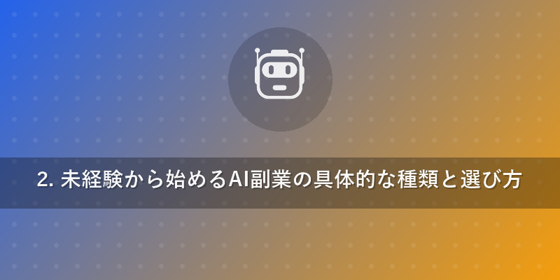
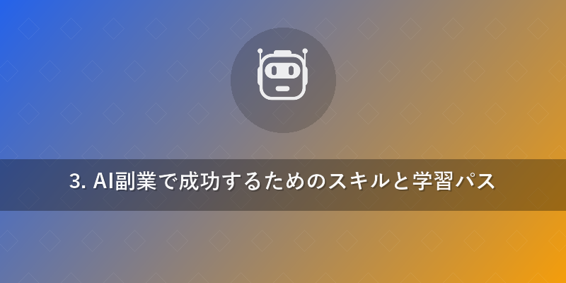
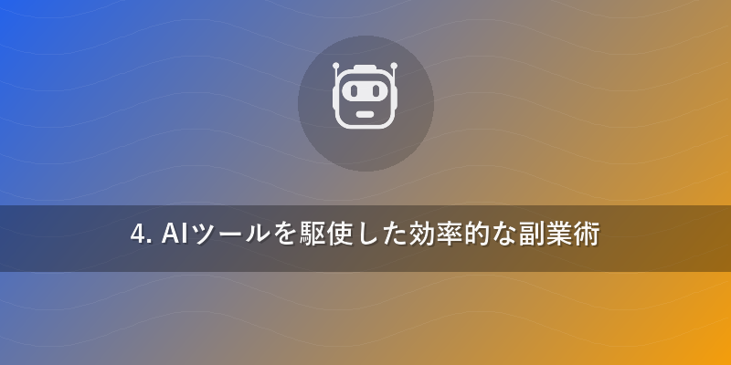

AI副業で未来を掴む！稼ぐための完全ガイド
「将来の収入が不安」「今の仕事だけでは物足りない」「新しいスキルを身につけてキャリアチェンジしたい」――こんな悩みを抱えていませんか？
もしあなたが、最新テクノロジーを活用して自宅で収入を得たいと考えているなら、今、最も注目すべき選択肢の一つが「AI副業」です。AI（人工知能）の進化は目覚ましく、私たちの働き方、ビジネス、そして日常生活そのものを根底から変えつつあります。ChatGPTのような生成AIの登場により、これまで専門家でなければできなかった作業が、誰もが手軽に行えるようになりました。
AIは単なるツールではありません。それは、私たちの創造性や生産性を飛躍的に高め、新たなビジネスチャンスを生み出す強力なパートナーなのです。しかし、「AI副業と聞いても、具体的に何をすればいいの？」「未経験でも本当に稼げるの？」と疑問に思う方もいるでしょう。
本記事では、AI Tech Insightsが、AI副業で稼ぐための具体的な方法、必要なスキル、効率的なツールの使い方、そして成功へのロードマップを徹底的に解説します。AIを味方につけ、未来の働き方を手に入れたい方は、ぜひ最後までお読みください。
1. AI副業が今、熱い理由｜未来を拓く新常識
なぜ今、これほどまでにAI副業が注目されているのでしょうか。その背景には、AI技術の劇的な進化と社会の変化が深く関係しています。
AI技術の民主化と市場の拡大
かつてAIは、大規模な研究機関や企業に限定された高度な技術でした。しかし、近年ではChatGPT、Midjourney、Stable Diffusionなどの生成AIツールが一般公開され、誰もが手軽にAIの力を活用できるようになりました。これにより、高度なプログラミングスキルがなくても、テキスト生成、画像作成、データ分析といった作業をAIに任せることが可能になったのです。
この「AIの民主化」は、クリエイティブな仕事から事務作業まで、あらゆる分野で新たな効率化と価値創造の機会を生み出しています。企業はAI人材を求め、個人はAIを活用して副業としてサービスを提供する、という新しいエコシステムが急速に構築されつつあります。
労働市場の変化と多様な働き方のニーズ
パンデミックを経験し、リモートワークやフレキシブルな働き方が一般化しました。本業とは別に収入源を確保したい、スキルアップしたい、あるいは将来的なキャリアの選択肢を増やしたいと考える人が増えています。AI副業は、時間や場所に縛られずに働けるという柔軟性と、高単価を狙える可能性を両立できるため、多様な働き方を求める現代人のニーズに合致しています。
特に、AIは人間が苦手とする定型作業や大量のデータ処理を得意とするため、AIと人間が協業することで、これまでにない効率性と生産性を実現できます。これにより、時間あたりの生産性が向上し、副業であっても高い収益を見込めるのです。

2. 未経験から始めるAI副業の具体的な種類と選び方
「AI副業」と一口に言っても、その種類は多岐にわたります。未経験からでも始めやすく、需要が高い代表的なAI副業をいくつかご紹介します。あなたの興味や得意分野に合わせて、最適なAI副業を見つけましょう。
H3: テキスト生成・記事執筆
AIを使ってブログ記事、SNS投稿、メール、キャッチコピー、商品紹介文などを生成する仕事です。ChatGPTなどの生成AIツールに適切な指示（プロンプト）を与えることで、高品質なテキストを短時間で作成できます。
- 向いている人: 文章を書くのが好き、情報収集が得意、Webライティングの基礎知識がある人。
- 必要なスキル: プロンプトエンジニアリング（AIに適切な指示を出すスキル）、校正・編集能力、SEOの基礎知識。
- 案件例: ブログ記事の代筆、Webサイトのコンテンツ作成、SNS運用代行。
H3: 画像・動画生成・編集
MidjourneyやStable Diffusion、RunwayMLなどのAIツールを活用し、魅力的な画像や動画を生成・編集するAI副業です。マーケティング、SNSコンテンツ、ゲーム開発など、幅広い分野で需要があります。
- 向いている人: クリエイティブな発想力がある、デザインやアートに興味がある人。
- 必要なスキル: プロンプトエンジニアリング、デザインの基礎知識（構図、色彩など）、画像・動画編集ツールの操作スキル。
- 案件例: SNSのアイキャッチ画像作成、広告用バナーデザイン、コンセプトアート生成、動画素材の作成。
H3: プログラミング・データ分析サポート
AIはコードの生成やデバッグ、データ分析の補助も得意です。完全にプログラミングができなくても、AIを活用して簡単なウェブサイトのコードを生成したり、データ分析のレポート作成をサポートしたりするAI副業があります。
- 向いている人: 論理的思考が得意、データに関心がある、ITリテラシーが高い人。
- 必要なスキル: AIチャットボットの活用スキル、基本的なプログラミング知識（あれば尚可）、データ可視化ツールの基礎知識。
- 案件例: Excelのマクロ作成支援、簡単なスクリプトの作成、データ収集・整理のサポート、BIツールのダッシュボード作成補助。
H3: カスタマーサポート・チャットボット開発
企業のウェブサイトやアプリにAIチャットボットを導入し、顧客からの問い合わせに自動で対応するシステムを構築・運用する仕事です。AIが進化するにつれて、より複雑な顧客対応も可能になっています。
- 向いている人: コミュニケーション能力が高い、課題解決が好き、ツールの設定や運用に抵抗がない人。
- 必要なスキル: チャットボットプラットフォームの知識、プロンプトエンジニアリング、顧客対応の基礎知識。
- 案件例: 企業サイト向けチャットボットのシナリオ作成、FAQの整理、導入後の運用サポート。
H3: AIツールの講師・コンサルタント
AIツールの使い方や、AIを活用した業務改善について教えるAI副業です。特に、ChatGPTなどの生成AIはビジネスでの活用法が多岐にわたるため、需要が高まっています。
- 向いている人: 人に教えるのが好き、特定のAIツールに詳しい、ビジネス課題の解決に興味がある人。
- 必要なスキル: AIツールの深い知識と実践経験、プレゼンテーション能力、コーチングスキル。
- 案件例: AIツール研修の実施、個別コンサルティング、セミナー講師。

3. AI副業で成功するためのスキルと学習パス
AI副業で安定した収入を得るためには、単にAIツールを操作できるだけでなく、いくつかの重要なスキルを身につける必要があります。
H3: プロンプトエンジニアリング
AIに適切な指示（プロンプト）を与え、求めている結果を引き出すための技術です。AIの性能を最大限に引き出すためには、明確で具体的なプロンプトを作成する能力が不可欠です。これはAI副業の「核」となるスキルと言えるでしょう。質の高いアウトプットは、質の高いプロンプトから生まれます。
- 学習方法: AIツールの公式ドキュメント、オンラインコース（Udemy, Courseraなど）、実践を通じて試行錯誤を繰り返すことが重要です。様々なプロンプト例を試したり、他の人のプロンプトを参考にしたりするのも有効です。
H3: 特定のAIツールの習熟
AI副業の種類にもよりますが、使用するAIツール（例: ChatGPT, Midjourney, Stable Diffusion, Canva AIなど）を深く理解し、使いこなす能力が求められます。ツールの最新機能や活用事例を常にチェックし、自身のスキルをアップデートし続けることが重要です。
- 学習方法: 各ツールのチュートリアル、YouTubeの解説動画、専門ブログ、コミュニティでの情報交換。
H3: マーケティング・ビジネス基礎
どんなに素晴らしいAIスキルを持っていても、それを必要としているクライアントに届けるためのマーケティング知識は不可欠です。自己ブランディング、案件獲得のための営業スキル、そしてクライアントの課題を理解し、AIを使って解決策を提案するビジネスセンスが求められます。
- 学習方法: ビジネス書、Webマーケティングのオンライン講座、副業関連のセミナー。
H3: コミュニケーション能力
クライアントの要望を正確にヒアリングし、AIで作成した成果物を分かりやすく説明し、フィードバックを建設的に受け入れる能力は、長期的なクライアント関係を築く上で非常に重要です。AIはあくまでツールであり、最終的な価値は人間が提供するコミュニケーションによって生まれます。
- 学習方法: 実践を通じて経験を積む、コミュニケーションスキルの書籍を読む、ビジネス交流会に参加する。

4. AIツールを駆使した効率的な副業術
AIは単に作業を代行するだけでなく、あなたの副業全体のプロセスを劇的に効率化し、収益を最大化する強力な味方になります。{{internal_link:AIツール活用術}}として、具体的な活用方法を見ていきましょう。
H3: 企画・アイデア出しの効率化
AIは大量の情報からトレンドを分析し、新しいアイデアや企画の種を見つけるのが得意です。例えば、ブログ記事のテーマ選定、SNS投稿のネタ出し、新しいサービスアイデアのブレインストーミングなどに活用できます。AIに複数の視点からアイデアを出させることで、自分だけでは思いつかないような斬新な発想を得られます。
H3: 作業の自動化と時間短縮
AIは定型的な作業を自動化し、あなたの貴重な時間を解放します。たとえば、データ入力、メールの返信文作成、議事録の要約、プログラミングのコード生成とデバッグなどは、AIに任せることで大幅な時間短縮が可能です。これにより、あなたはより創造的で価値の高い作業に集中できます。
H3: クオリティ向上と差別化
AIは、人間の手作業では難しいレベルの品質と一貫性を提供できます。例えば、AIによる画像生成は、プロのデザイナー顔負けのクオリティを実現し、SNSやウェブサイトのビジュアルを一新できます。また、AIで生成したテキストは、表現のバリエーションを増やし、より魅力的なコンテンツ作成に貢献します。AIを活用することで、他との差別化を図り、より高い単価での案件獲得に繋げられるでしょう。
5. AI副業を始めるための具体的なステップと注意点
AI副業を成功させるためには、計画的な準備と継続的な努力が不可欠です。ここでは、具体的な始め方と、注意すべき点について解説します。
H3: 目標設定と市場調査
まず、AI副業で何を達成したいのか、具体的な目標を設定しましょう。「月に〇万円稼ぎたい」「〇〇のスキルを身につけたい」など、数値目標や期間目標を立てるとモチベーションを維持しやすくなります。次に、自分が興味を持ったAI副業が、現在どのような市場で、どの程度の需要があるのかを調査します。競合のサービス内容や価格帯も参考にしましょう。
H3: スキル習得とポートフォリオ作成
目標とするAI副業に必要なスキルを身につけます。オンライン講座や書籍を活用し、積極的に学習を進めましょう。学んだ知識を活かして、実際にAIツールを使いこなす経験を積みます。そして、自分のスキルや実績を証明するために、ポートフォリオ（実績集）を作成します。これは、クライアントに信頼される上で非常に重要です。ブログ記事の作成、AI生成画像、簡単なチャットボットのデモなど、何でも構いません。
H3: 案件獲得とクライアントワーク
スキルが身につき、ポートフォリオが完成したら、いよいよ案件獲得です。クラウドソーシングサイト（例: CrowdWorks, ランサーズ）や、SNS、自身のウェブサイトを通じて営業活動を行います。最初のうちは、実績作りのために単価が低めの案件から始めるのも一つの手です。クライアントとのコミュニケーションを密に取り、常に期待を上回る成果を出すよう心がけましょう。{{internal_link:副業案件獲得術}}に関する記事も参考にしてください。
H3: 法務・税務に関する注意点
副業で得た収入は、原則として確定申告の対象となります。年間20万円を超える所得がある場合は、忘れずに確定申告を行いましょう。また、AIが生成したコンテンツの著作権や、クライアントの機密情報の取り扱いには十分注意が必要です。契約書の内容をしっかり確認し、トラブルを未然に防ぎましょう。必要であれば、税理士や弁護士といった専門家への相談も検討してください。
まとめ：AI副業で未来の働き方を手に入れよう
AI技術の進化は、私たちに新たな働き方と収入源の可能性をもたらしています。「AI副業」は、もはや一部の専門家だけのものではなく、誰もが挑戦できる新時代のビジネスチャンスです。
本記事では、AI副業の魅力、未経験から始められる具体的な種類、成功に必要なスキル、効率的なAIツールの活用法、そして具体的なステップと注意点について解説しました。重要なポイントを再確認しましょう。
- AIの民主化と労働市場の変化が、AI副業の追い風となっている。
- テキスト生成、画像・動画生成、プログラミングサポート、チャットボット開発、AI講師など、多岐にわたるAI副業がある。
- プロンプトエンジニアリング、特定のAIツール習熟、ビジネス基礎、コミュニケーション能力が成功の鍵。
- AIはアイデア出しから作業自動化、品質向上まで、副業のあらゆる段階で活用できる。
- 目標設定、スキル習得、ポートフォリオ作成、案件獲得、そして法務・税務の知識が重要。
AI副業は、あなたの知識と努力次第で無限の可能性を秘めています。今日から一歩踏み出し、AIを味方につけて、自分らしい未来の働き方をデザインしましょう。AI Tech Insightsは、あなたの挑戦を全力で応援します！
さあ、あなたもAI副業の世界へ飛び込み、新たな収入源とキャリアを築き始めませんか？